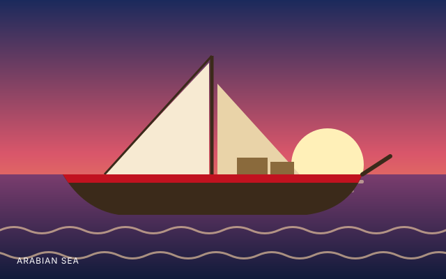

Francesco Giumelli
Associate Professor in International Relations · University of Groningen
[Short bio: background, research interests and what Francesco does in the project.]
A small research team that reads what the UN's sanctions experts found, and makes it easier for everyone else to see it.
EXPOSE began as a research project at the University of Groningen. We noticed that the reports of the UN Panels of Experts contain an unusually detailed record of how sanctions are evaded, but that the evidence sits inside hundreds of pages per report.
We read those reports, identified each documented evasion and classified it. The result is a database that lets you ask simple questions: which methods appear most often, in which regimes, and how have they changed over time?
[Add your own paragraph here: research questions, funding, supervisors, partners.]

All three of us are linked to the University of Groningen.
[Short bio: background, research interests and what Francesco does in the project.]
[Short bio: background, research interests and what Irene does in the project.]
[Short bio: background, research interests and what Ana does in the project.]
To use real photos, replace each <div class="avatar"> in this file with <img class="avatar" src="assets/img/ana.jpg" alt="Ana">.
One place to search the evasion methods that Panel reports describe, instead of scanning each report separately.
See whether techniques seen with one sanctions regime also appear in others, such as ships going dark or front companies.
Give compliance staff, journalists and policymakers indicators they can look for in practice.